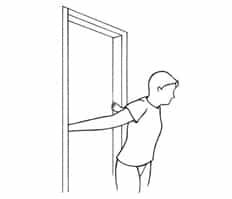

David is a strength coach and bestselling Men's Health author. You can follow him at HowToBeast.com.


Far too many men hold themselves like 13-year-old girls who are too shy to wave down the waitress and ask for a glass of water.
Whether I’m walking down the street passing a man who nervously looks down at his feet as we cross paths, or just meeting someone for the first time who rambles anxiously about god-knows-what as soon as we’re introduced, it’s clear that a large percentage of men shit their pants at least five times a day.
And it’s obvious. Whether you realize it or not, you size someone up within an instant of seeing them. A 2006 study at Princeton University found that people’s inferences about someone’s attractiveness, likability, trustworthiness, competence, and aggressiveness are made up after a mere 100 milliseconds of viewing their face. Allowing the participants to view the faces without a time constraint rarely changed their judgments.
This means that you should do what you can to portray what you want to. How you carry yourself, dress yourself, and build yourself physically will dictate EXACTLY how other people perceive you, and therefore treat you and relate to you. NOT taking the time to consciously analyze and plan these things is silly. How people view us and treat us will either propel us towards success or condemn us to failure. It will either fill women’s pants with moist liquids and men’s hearts with respect, or dry up that vagina like the fucking Sahara and kill your chances of ever impressing anyone in a job interview.
Obviously doing things like lifting weights to build a bigger chest and back and practicing martial arts to ingrain a sense of fearlessness in your character are worthwhile pursuits that will shape your presence over time, but in this article I’ll aim to offer you three “quick fixes” that can make a nearly instant impact on your presence if used correctly.
One of the first things, if not the first, that people notice about you is your posture. Good posture is expansive, takes up space, and embodies strength. Poor posture shrinks and portrays weakness. And, while a lot of factors go into solid posture, the most important is undoubtedly bringing your shoulders back to expand your chest cavity and holding your head high.
The problem is that today we constantly bring our arms forward to type on computers, drive cars, or play video games. And this shortens the muscles on the front of our body, resulting in weak posture where the shoulders roll forward. To combat this you should stretch your chest. The simplest way to do this is standing inside of a doorframe with your palms holding the sides of the frame, and then leaning forward and holding that position for at least 30 seconds.

If you do this a couple times per day, you will lengthen these muscles and hold your shoulders back by default. This makes your chest look bigger, your shoulders look wider, and your presence more dominant.
Earlier this year I wrote an entire article on this, but I’ll distill the key points here. Strong eye contact is associated with confidence and authority. By holding eye contact you can effortlessly convey these things without saying a word. The trick is to hold eye contact for just a bit longer than whoever you’re talking to. If you overdo it, it will come off as creepy or like you’re trying to intimidate them. If, on the other hand, you struggle to hold it, it will convey fear or nervousness.
Practice your eye contact in every interaction. I promise it’s worth it. I can’t even count the number of times girls have blushed, looked down, and complimented me on my eye contact. And I can tell you that it’s definitely built a strong attraction inside of them.
This conversation variable is similar to eye contact, although not quite as important. Eye contact is recognized before you even open your mouth, just like posture, and so those make for a stronger first impression. But the speed at which you speak is also quite important when it comes to creating a powerful presence. And it’s easy to tweak.
You want to speak slowly. As in while you’re speaking, the rate at which words are exiting your mouth is calm and controlled. But also as in allowing people to finish talking and pause for a moment before responding. This shows you’re completely comfortable in the conversation. It also creates an interview-type dynamic where you’re the interviewer and the other person is qualifying themselves to you.
Want to radically improve your confidence in less than a month? Check out my online course 28 Days to Alpha.
Read More: 8 Tips For Getting Laid More By Developing Your Sexual Presence